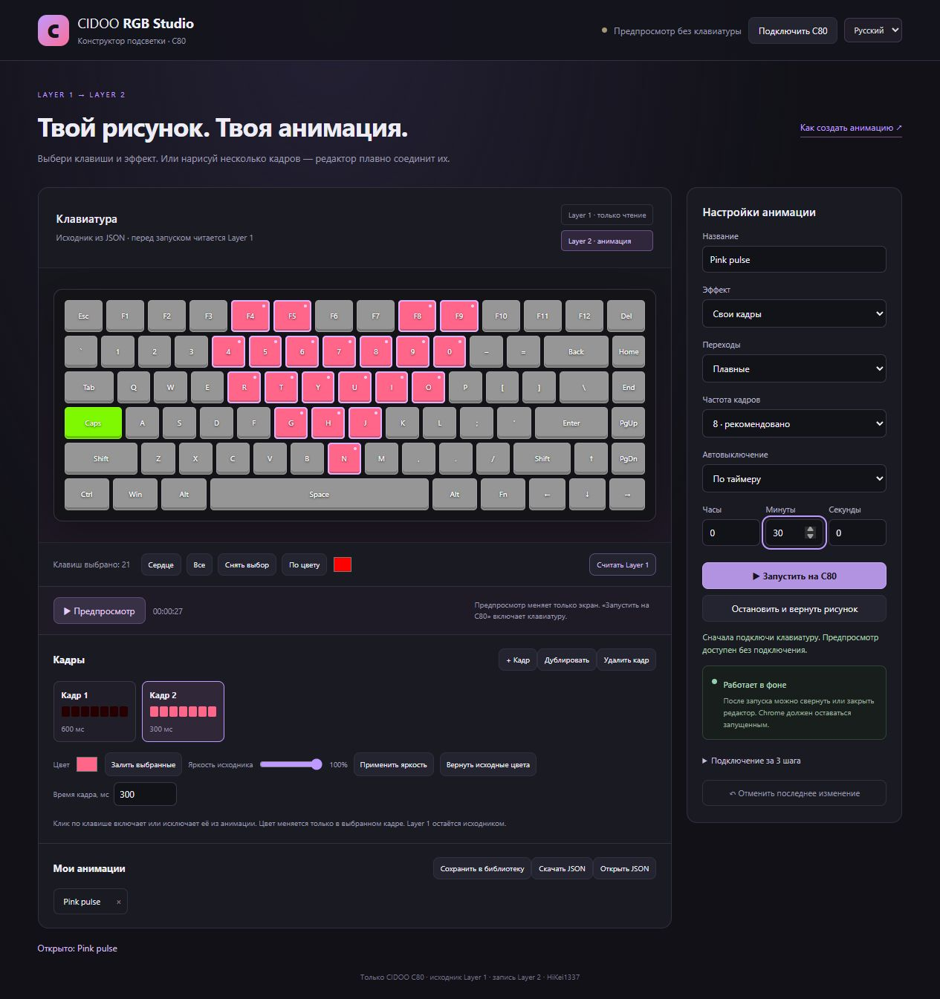

Готовые движения
Двойной пульс сердца, мягкое дыхание и переливание. Выбери клавиши, скорость и яркость.
Пусть сердце бьётся, цвета перетекают, а подсветка живёт. Преврати свой рисунок CIDOO в анимацию — без кода.
Chrome 117+ · USB · Бесплатно для некоммерческого использования
Нарисуй подсветку на сайте CIDOO. Расширение прочитает первый слой и будет менять яркость и цвета во втором. Исходный рисунок останется на месте.
Двойной пульс сердца, мягкое дыхание и переливание. Выбери клавиши, скорость и яркость.
Выбирай клавиши, раскрашивай кадры и соединяй их плавными переходами. Предпросмотр покажет результат.
Сворачивай вкладку и занимайся своим делом. Работай до остановки или поставь таймер. Chrome должен оставаться запущенным.
Клик по клавишам. Цвет. Новый кадр. Готово. Сохраняй проекты в библиотеку или делись JSON-файлом.
Как сделать свою анимацию ↗
Скачай ZIP с GitHub и распакуй в постоянную папку.
Открой chrome://extensions. Включи режим разработчика → «Загрузить распакованное». Выбери папку с manifest.json.
На сайте CIDOO подключи клавиатуру по USB. Включи пользовательскую подсветку и выбери Layer 2.
Открой конструктор расширения, подключи устройство, считай Layer 1 и выбери эффект. Нажми запуск.
Проект использует протокол изученного драйвера CIDOO. Совместимость с другими моделями пока не подтверждена; редактор и протокол рассчитаны на исследованную раскладку. Если устройство не определяется, не запускай анимацию — сообщи модель в GitHub Issues.
После запуска — да. Управление идёт из расширения. Сам Chrome должен работать, а компьютер — оставаться включённым и не спать. Не подключай сайт обратно к устройству во время анимации.
По умолчанию остаётся последний кадр. В настройках можно выбрать возврат прежней подсветки Layer 2 или рисунка Layer 1. Первый слой не перезаписывается.
Никуда. Настройки и анимации хранятся локально. Расширение не отправляет проекты автоматически. Отправка работ в мастерскую и вход владельца используют Supabase. Проект экспериментальный; фоновая работа проверена на имитаторе HID, полный тест новой версии на устройстве ещё предстоит.